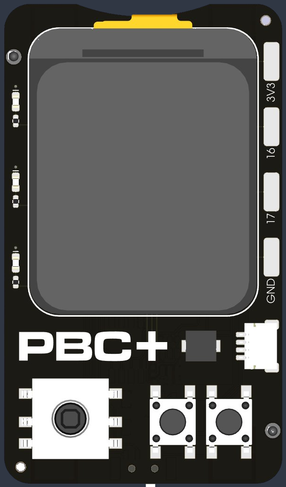

Aktivierte Sensoren erscheinen als Block-Kategorie
„Externe Sensoren“. Der Treiber-Code wird automatisch in dein
Programm eingebaut – du musst keine Bibliotheken hochladen.
Hochgeladene PNG-Dateien kannst du direkt auf dem Display
anzeigen lassen (Block Bild anzeigen unter „Display")
oder als Sprite verwenden (Blöcke unter „Sprites").
Zum Hoch- oder Anzeigen muss das Gerät verbunden sein.
Zuerst mit dem Gerät verbinden.
Farbe wählen
#ff8040
Bild bearbeiten und hochladen
Noch kein Bild geladen.
Ausschnitt (Original)
—
Ausgabegröße
×
px
Maximal 240 × 280 (Display-Größe)
Skalierung100 %
Dateiname
Vorschau auf dem Display
—
Tipp: Ziehe das blaue Rechteck zum Verschieben, die Ecken zum
Verändern der Größe. Das Bild wird beim Hochladen auf die
Ausgabegröße skaliert.
Neues Bild zeichnen
Wähle die Größe des Bildes. Sprites sind typisch 16–48 Pixel
gross; ein ganzes Display ist 240×280.
Bild zeichnen
Werkzeug
Stärke
2 px
Farbe
Verbinden
Wie möchtest du dein Programm ausführen?
PBC+ Emulator

Steuerung: Joystick und Tasten antippen oder Pfeile · A · B · Leertaste
Neigungssensor
Punkt ziehen = kippen, Doppelklick = flach
x 0.00 y 0.00 z 1.00 g
Hinweis: Der Emulator führt MicroPython im Browser aus.
Manche Funktionen sind eingeschränkt: machine-Modul,
exakte time.sleep-Genauigkeit, hardwarespezifische Tricks.
Bilder im Browser
Diese Bilder sind im Browser gespeichert (nicht auf einem Gerät)
und stehen dem Emulator zur Verfügung.